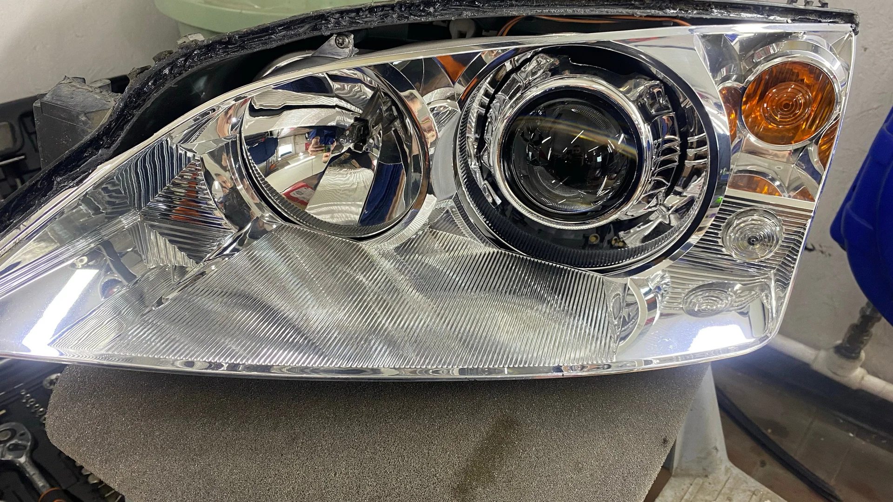
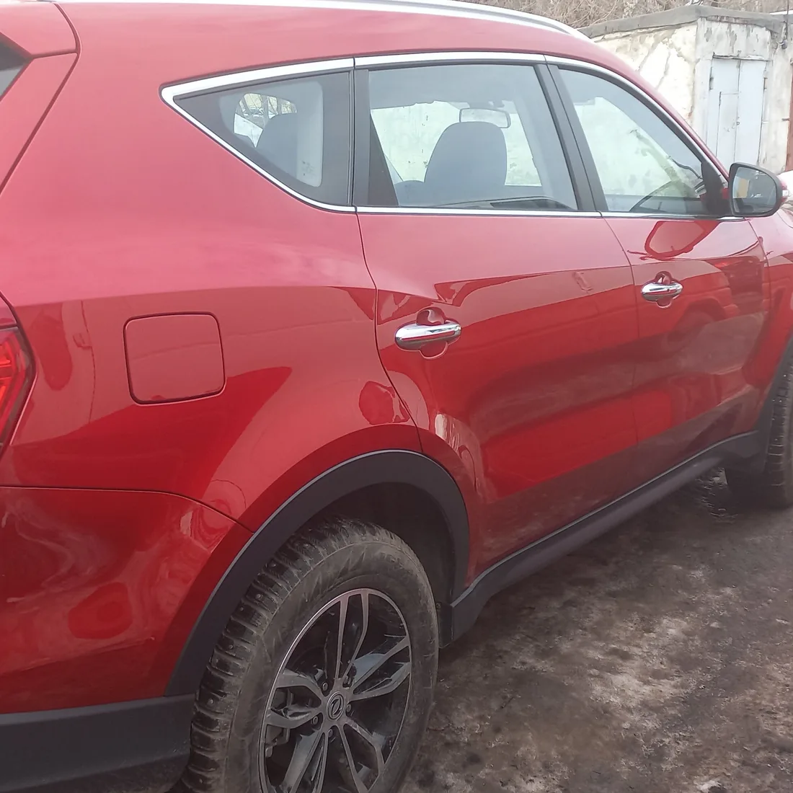
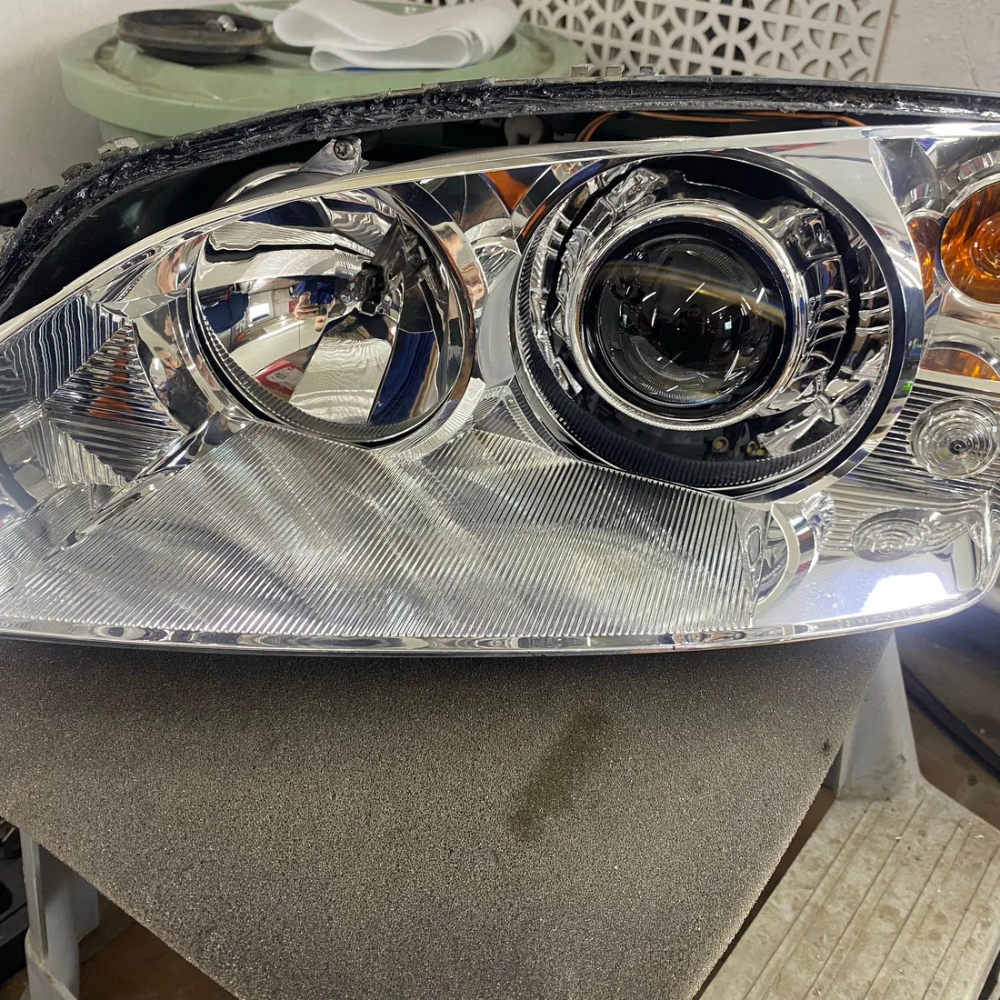

Автосервис · Новочебоксарск, Коммунистическая улица, 9
Тонировка, фары и шиномонтаж в Новочебоксарске: запись на удобное время
Save Avto21: тонировка автостёкол, замена стёкол и линз фар, шиномонтаж и балансировка, удаление вмятин без покраски, мойка. Выберите день и час и напишите нам в WhatsApp.
- 4,6 на Яндекс Картах, 41 оценка
- Шиномонтаж, тонировка, оптика и мойка в одном месте
- Запись на конкретный день и час

Что можно сделать в Save Avto21
Входит
- Тонирование автостёкол
- Замена стёкол и линз фар, установка света
- Шиномонтаж, балансировка и вулканизация
- Удаление вмятин без покраски
- Мойка и хранение шин
Отдельно, если нужно
- Выездной шиномонтаж и мотошиномонтаж
- Утилизация шин и прокатка дисков
- Оплата картой, парковка, Wi-Fi
Услуги и цены
Цен на карточке на Яндекс Картах нет, поэтому сумму называют при записи, по вашему автомобилю.
Кузов, стёкла и свет
- Тонирование автостёколуточнить
- Замена стёкол и линз фаруточнить
- Удаление вмятин без покраскиуточнить
- Мойкауточнить
Шины и колёса
- Шиномонтаж и балансировкауточнить
- Выездной шиномонтажуточнить
- Мотошиномонтажуточнить
- Вулканизацияуточнить
- Хранение шинуточнить
Точную сумму называют при записи: она зависит от автомобиля и объёма работ.
Как проходит визит
- 01
Выбрали время
Укажите услугу, день и час в форме на сайте - получится готовое сообщение.
- 02
Написали в WhatsApp
Отправьте сообщение в WhatsApp Save Avto21: подтвердят время и назовут стоимость для вашего автомобиля.
- 03
Приехали на Коммунистическую, 9
Мастер осмотрит автомобиль и согласует объём работ.
- 04
Забрали автомобиль
Смотрите результат на месте и забираете автомобиль.


Что пишут клиенты
Фары
«Фары были в плачевном состоянии, поменяли стёкла, поставили отличный свет» - Владислав Николаев, 19 сентября 2024.
В срок
«Ребята всё делают качественно и в срок. Большой перечень услуг» - Михаил Краснов, 27 июня 2023.
Широкий выбор
«Большой выбор аксессуаров. Недавно открыли шиномонтаж и заправку кондиционеров» - Кирилл Захарченко, 25 июня 2023.
Мойка
«Отличная мойка по приятным ценам, обширный ассортимент» - Дмитрий Канев, 10 января.
Отзывы с Яндекс.Карт
«Отличный сервис, фары были в плачевном состоянии, поменяли стёкла, поставили отличный свет, езжу кайфую, всё сделано быстро, рекомендую.»
Владислав Николаев · 19 сентября 2024
«Отличный сервис. Ребята всё делают качественно и в срок. Большой перечень услуг. Приятные цены.»
Михаил Краснов · 27 июня 2023
«Отличная мойка по приятным ценам, обширный ассортимент, постоянный клиент теперь у них.»
Дмитрий Канев · 10 января
Отзывы с карточки на Яндекс.Картах, без правок.
Частые вопросы
Нужна ли запись?
Выберите день и час в форме на сайте и напишите в WhatsApp или позвоните +7 (917) 675-86-85.
Сколько стоят услуги?
На карточке цен нет, поэтому сумму называют при записи: она зависит от автомобиля и объёма работ.
Какие услуги есть?
Тонирование автостёкол, замена стёкол и линз фар, шиномонтаж, балансировка, вулканизация, удаление вмятин без покраски, мойка, хранение шин.
Есть ли выездной шиномонтаж?
Да, в особенностях карточки указаны выездной шиномонтаж и мотошиномонтаж.
Можно ли оплатить картой?
Да, в особенностях карточки указана оплата картой. Также есть парковка и Wi-Fi.
Где вы находитесь?
Новочебоксарск, Коммунистическая улица, 9.
Как с вами связаться?
WhatsApp или телефон +7 (917) 675-86-85, также есть группа во ВКонтакте.
Запишитесь на тонировку, шиномонтаж или замену света в Новочебоксарске
- Адрес
- Коммунистическая улица, 9, Новочебоксарск
- Часы
- пн-пт 9:00-20:00
- Телефон
- +7 (917) 675-86-85